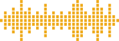

day impulse
новый инвестиционный продукт
В стратегии «Day Impulse» совершаются сделки с направлением только на рост актива, с фиксированным стопом на сделку и отсутствием переноса сделки на следующий торговый день, где присутствует риск гэпов.
Профит фактор 1:4
Анализ
Анализ активов ведется среди ликвидных, со средним объемом более 750к. Список составляет более пятьсот акций на каждый день, в которых проводится анализ с ожиданием импульсного движения в течение торговой сессии.
Покупка
Сигнал на покупку формируется после получения подтверждений некоторых паттернов, а заявки выставляются до открытия торговой сессии.
Стратегия входа
Cтратегия предусматривает вход на каждую позицию в размере 15% от свободного кэша или от общей суммы портфеля. При условии отсутствия других стратегий в вашем портфеле. Максимальное количество сделок на торговый день составляет до 5 активов.
Результаты
по данной стратегии с 25 января 2022 г.
общее количество сделок
общая годовая доходность за минусом издержек
процент положительно завершенных сделок
Риски
Контролируется с помощью Stop Loss. Закрытие сделки в конце торговой сессии, позволяет ограничить возможные убытки от гэпов на следующий день.
Важно
Сигнал по активу формируется за час до открытия основной торговой сессии. Заявки выставляются до открытия рынка.